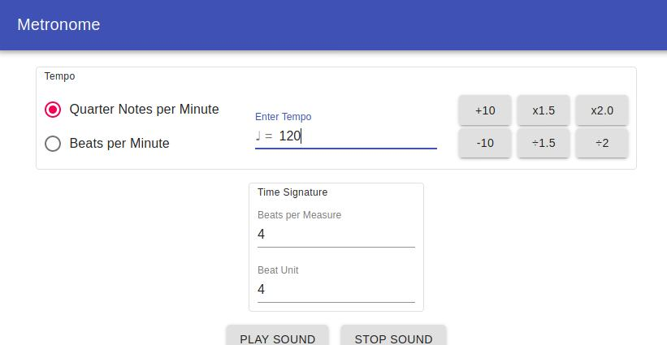

Projekte
Metronome
Ein Metronom, entwickelt als Progressive Web App in ReactJS mit dem UI-Framework Material-UI.
Zur App.
Zum Code.
Informatikstudent und Webentwickler
Ein Metronom, entwickelt als Progressive Web App in ReactJS mit dem UI-Framework Material-UI.
Zur App.
Zum Code.
Ich studiere Informatik (B.Sc.) im 5. Semester an der Heinrich-Heine-Universität in Düsseldorf, mit dem Schwerpunkt Betriebssysteme.
Aktuell beschäftige ich mich mit dem Thema Webentwicklung, im Frontend mit ReactJS und im Backend mit Java/Spring Boot.
E-Mail: j.kneiphof@gmx.de